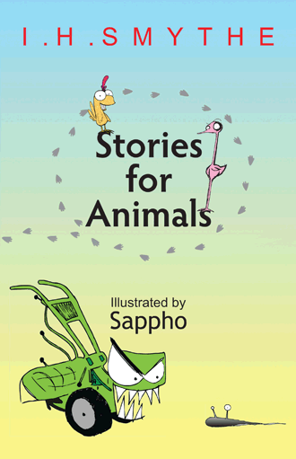

Stories For AnimalsHome | Gallery | Poetry For Animals | Stories For Animals |
Dwynwen's Feast | Plays | Videos | Short works | Store |
|

Read an excerpt from
|
If you are reading this, you are an animal. There are literally millions of books written about animals, but only two books written specifically for animals – and this is one of them.* Originally these stories were published on the wind as an olfactory collection for dogs, but when they soared to #1 on the bestseller lists, other creatures demanded versions for themselves. Thus they were published with vegetable based inks for the edification of rabbits and slugs; converted into a vigorous waggle dance for honeybees; transcribed into whale songs, bird calls, cricket chirps, and elephant trumpets; and, lastly, translated into cow pies for the satisfaction of dung beetles and houseflies. All of these animals enjoyed reading about phobic cats, skeptical basset hounds, heroic honeybees, tree-hugging slugs, and megalomaniacal mollusks – but now, at long last, Stories for Animals is available to animals of all species – including yours. Recommended for ages 11+ (77+ in dog years) * The other is Poetry for Animals, available at fine bookstores and from woodland creatures everywhere. |